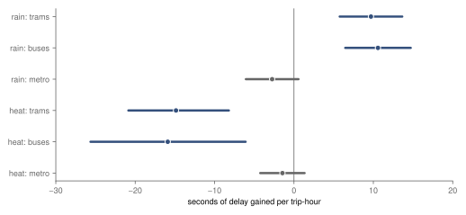

Hub · Weather on the rails · Prague trams, buses and the metro, summer 2025
Weather on the rails
Three pre-specified studies of how Prague's tram and bus delays and stop times differ with the weather, on the same 121 million stop passes: rain hours, hot hours, and dwell as a passenger proxy.
- parts published
- 3 numbered by publication order
- designs committed
- 6 and 8 Oct 2026 CEST, commit times self-reported
Overwhelmed? Here's the short version
- Each part fixed its question, its model and its reading rule before the weather was joined to the delays.
- Part 1: in an hour with rain, a tram gained about 9.7 seconds more delay than in a dry hour (5.8 to 13.6, supported); the registered placebo failed (5.8 s), so it is an adjusted association.
- Part 2: in a dry hour at 30 °C or more, a tram gained about 14.9 seconds less delay than in a mild one (−20.9 to −8.2), the opposite of the registered expectation, so inconclusive; it rests on 11 hot days.
- Part 3: in rain hours a tram's stop was about 0.25 seconds shorter, with no clear weekend-against-weekday-morning difference (+0.04 s, −0.29 to 0.37, not supported), so Jan Gehl's split between necessary and optional trips does not show in dwell.
- Parts 1 and 2 measure the sum of passengers, traffic and the vehicles themselves; part 3 finds no shorter stops in hot hours (−0.12 s), and traffic is untested.
Photo: Aktron · CC BY-SA 4.0, toned

The parts
-
Part 1 · rain · March–September 2025, 47 days with rain
Are Prague's trams later in rain hours?
In an hour with at least 0.5 mm of rain, a tram gained 9.7 seconds more delay than in a dry hour of the same route, hour and weekday on the same date (5.8 to 13.6, supported); the difference is larger in heavier rain, but the registered placebo failed, so it is an adjusted association.
-
Part 2 · heat · summer 2025, 11 days at 30 °C or more
Are Prague's trams more delayed in hot hours?
In a dry hour at 30 °C or more, a tram gained 14.9 seconds less delay than in a mild hour of the same route and week (−20.9 to −8.2); registered as more delay, so inconclusive; an association on 11 hot days whose cause the data cannot distinguish.
-
Part 3 · rain, heat and who boards · 14 wet weekend days
Are tram stops shorter in rain?
In rain hours a tram's stop was about 0.25 seconds shorter on a weekday morning, and the weekend difference is +0.04 s (−0.29 to 0.37, not supported), so dwell gives no sign that rain cancels mainly optional trips; hot hours show no shorter stops (−0.12 s).
Parts 1 and 2 side by side
Parts 1 and 2 use the same table and outcome, the delay a trip gains within a clock hour, compared with the same route at the same hour and weekday, with the weather of that hour from four ČHMÚ stations, but not the same model: part 1 compares hours within a date (date effects), part 2 within a week (week effects), because heat lasts all day. Part 2's registered check with date effects gives −11.4 seconds (−16.4 to −6.3). The two estimates have opposite signs. The metro's intervals include zero under both, −2.8 s in rain (−6.1 to 0.6) and −1.4 s in heat (−4.2 to 1.3), which fits a difference on the street rather than one common to all modes, without showing what causes it. The heat part rests on 11 hot days, the rain part on 47 wet ones.
About 9.7 s more delay gained per trip-hour in rain hours, about 14.9 s less in hot hours; the metro's intervals include zero.

How each part was pre-specified
Each part has its own design file, committed before the weather it studies was joined to its outcome, and its own dated changes after registration in its change log. The heat part reused the delays the rain part had already read, against rain only, and says so; the third part measures dwell, which neither earlier part had read, and changed its weekend window once, before the comparison, for a stated reason. The commit times are the author's own, not an independent registry's.